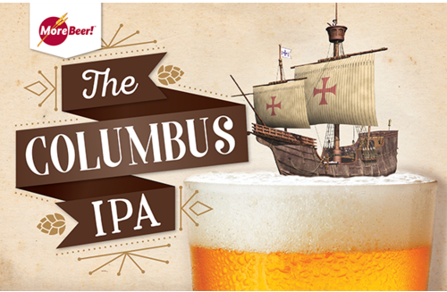
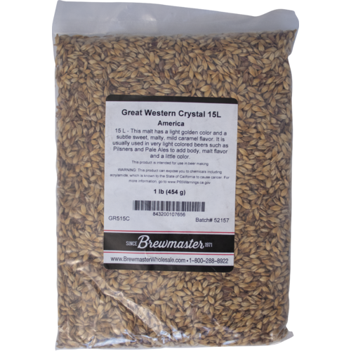
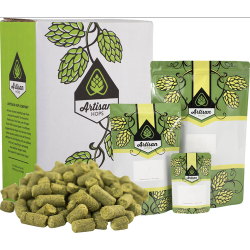
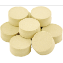
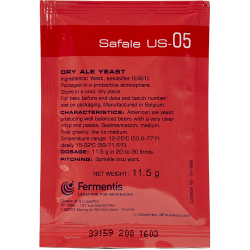

Columbus IPA

- Date brewed: April 10, 2022
- Brew team: Kenny (team lead), Joe, Adam, Mike M., Ally
Recipe Kit
Ingredients
Water
6 gallons of distilled water
Steeping Grains
1.5 lbs. Crystal 15L

1-lb. bag shown
Malt Extract
9 lbs. Ultralight Malt Extract (LME)

Hops
1 oz. Columbus (Pellets)

2 oz. Columbus (Pellets)
2 oz. Columbus (Pellets)
Clarifier
1 Whirfloc Tablet

Yeast
Safale US-05 American Ale (Dry) Yeast - Fermentis

Propper Starter Condensed Wort 16 oz Can